面板回来了：每组一块面板，把面板本身做好。
R33「一面」去掉了面内卡片，只靠留白和细线分组，得 60（内容审核页，无批注），低于 R31 的 65。这和 R28 的批注一致：「没有动效和面板组件，单纯的线条分割阅读还是很吃力」。R34 从 R32 出发（R31 + 质感五条），不沿用 R33。X 案例只保留不去面板的部分：统一左线、颜色克制、指标样式。
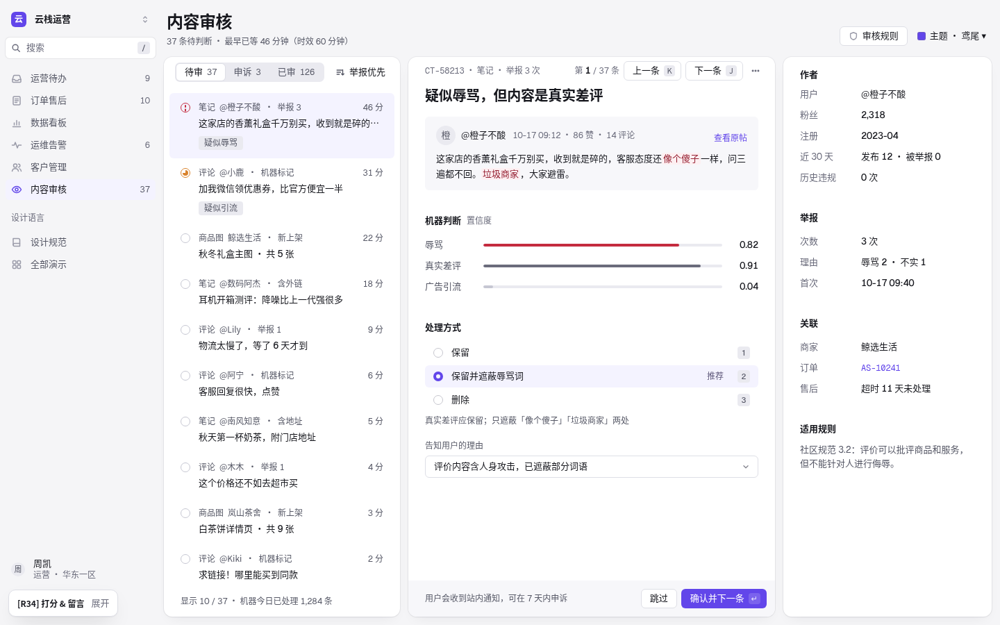
诊断：R33 为什么掉到 60
- R30 / R31（65）：内容审核是三块面板落在灰底上，一眼分出队列、正文、查阅栏。
- R33（60）：三栏合成一张白面，只剩两条 1px 竖线；区块之间靠留白，读者要自己找边界。
- 结论：Xiang 要看得见的面板来分组。Catalyst 式「一张面」不适合他；面板是保留项，要提升的是面板质量。
规则 P1–P4（R34 新增）
- P1 面板。每组内容一块面板：无描边、圆角统一 12（
--r-panel）、柔和三层投影（--el-panel：1px 环 + 1px 近影 + 20px 远影）。面板之间 12px 缝，落在浅灰底上。 - P2 面板标题。标题行 52px，标题 13px / 600 正文色，左边与面板内容同线（24px 内边距）。
- P3 可点的面板。指标格悬停升到
--el-panel-hi；选中 1.5px 主色环 + 主色淡影。 - P4 从 X 案例只取三样。面板内统一左线；一种主色 + 灰阶；指标 = 小标签 + 大数字 + 涨跌小标签。不取「去容器」。
R33 → R34 量化（1440×900 首屏）
| 页面 | 贯穿线条 | 面板数 |
|---|---|---|
| 运营待办 | 18 → 17 | 4 → 5 |
| 订单售后 | 46 → 42 | 3 → 7 |
| 数据看板 | 10 → 9 | 5 → 12 |
| 运维告警 | 21 → 20 | 4 → 5 |
| 客户管理 | 13 → 12 | 4 → 5 |
| 内容审核 | 22 → 20 | 4 → 6 |
面板数回到 R32 的水平（合计 24 → 40），线条回到 R32（不多于 R31）。7 主题 × 6 页 + 1280 宽灰字对比 0 处不合格；订单首屏 17 行；tools/m34_test.js BAD 0。
并排对照（本项目自己的渲染，左 R33 · 右 R34）
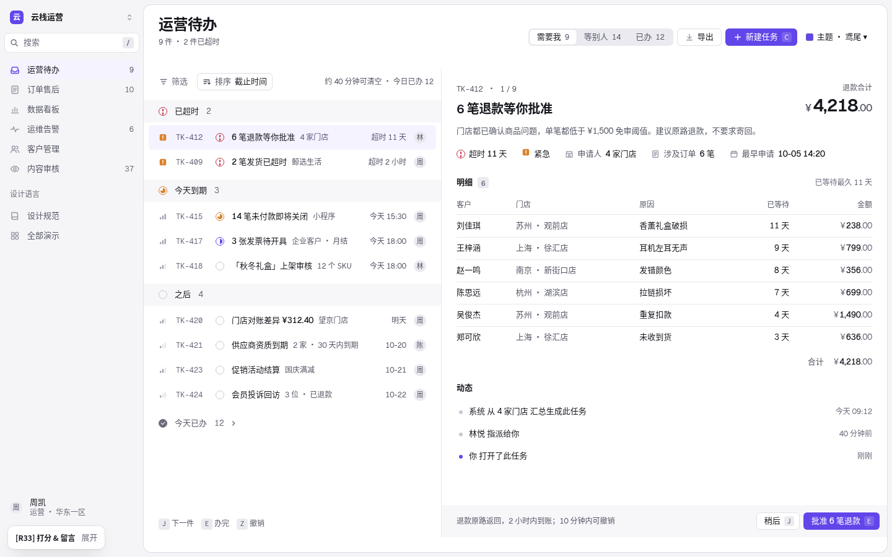
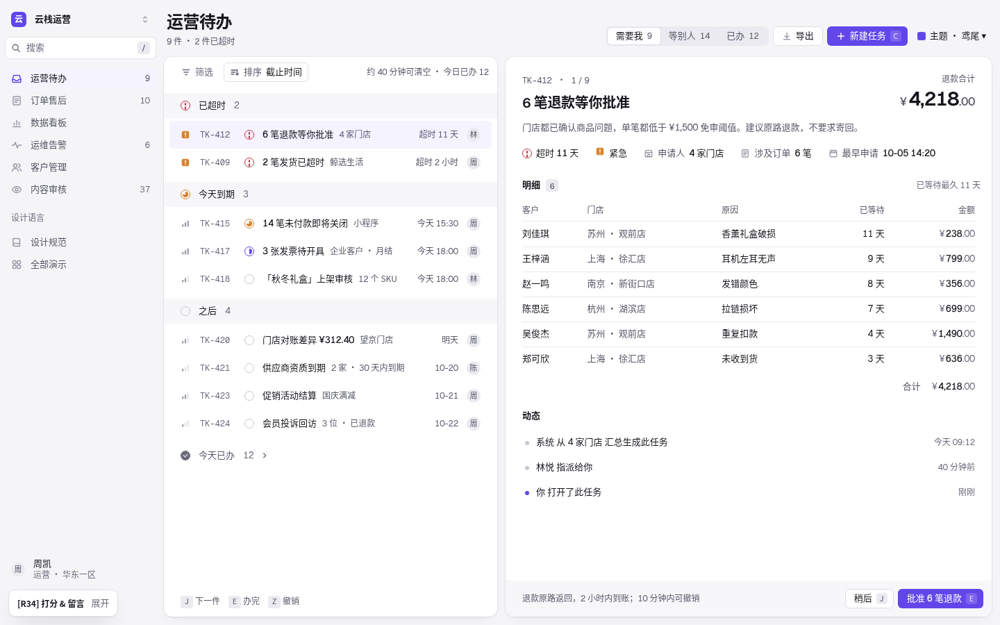
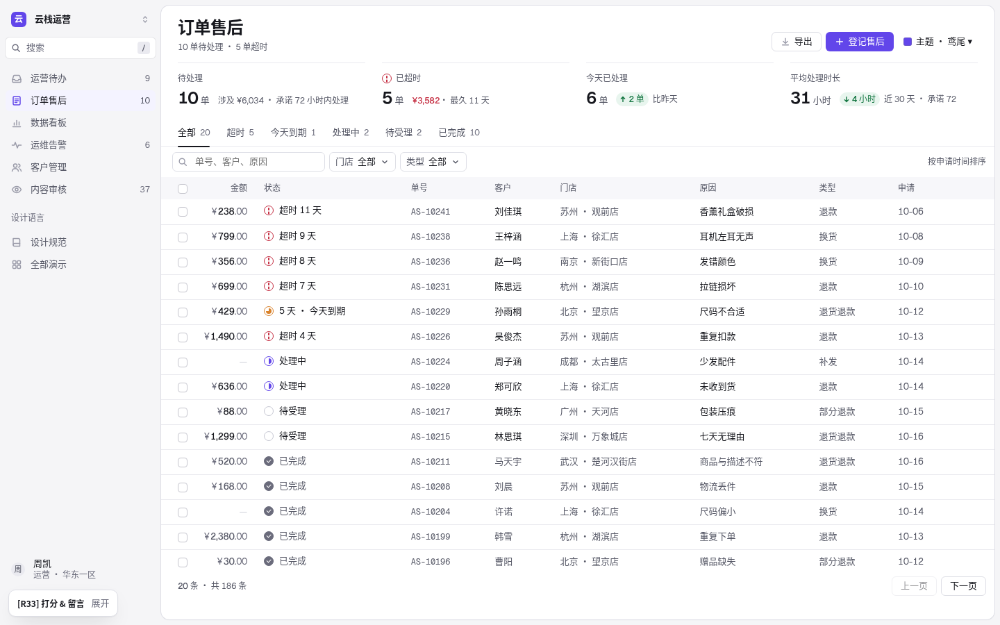
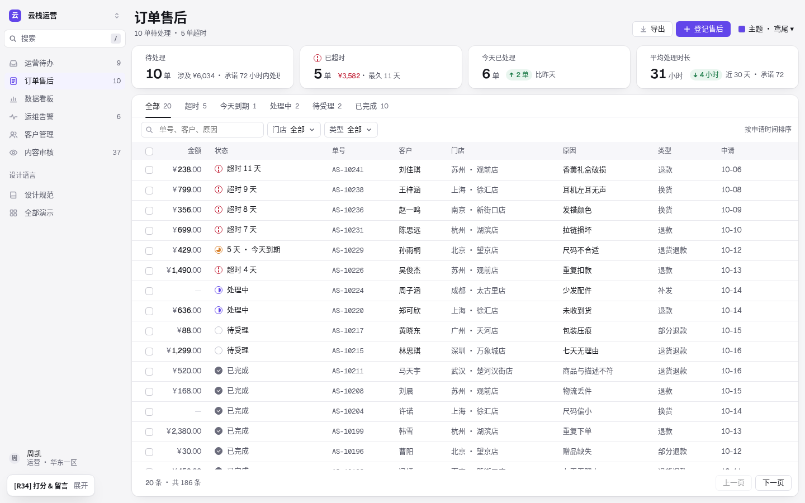
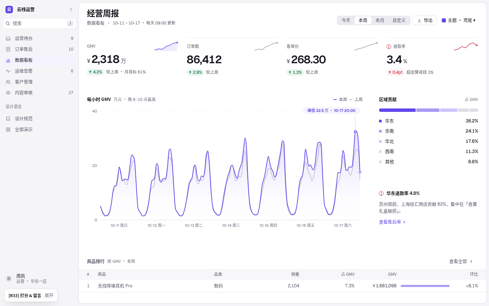
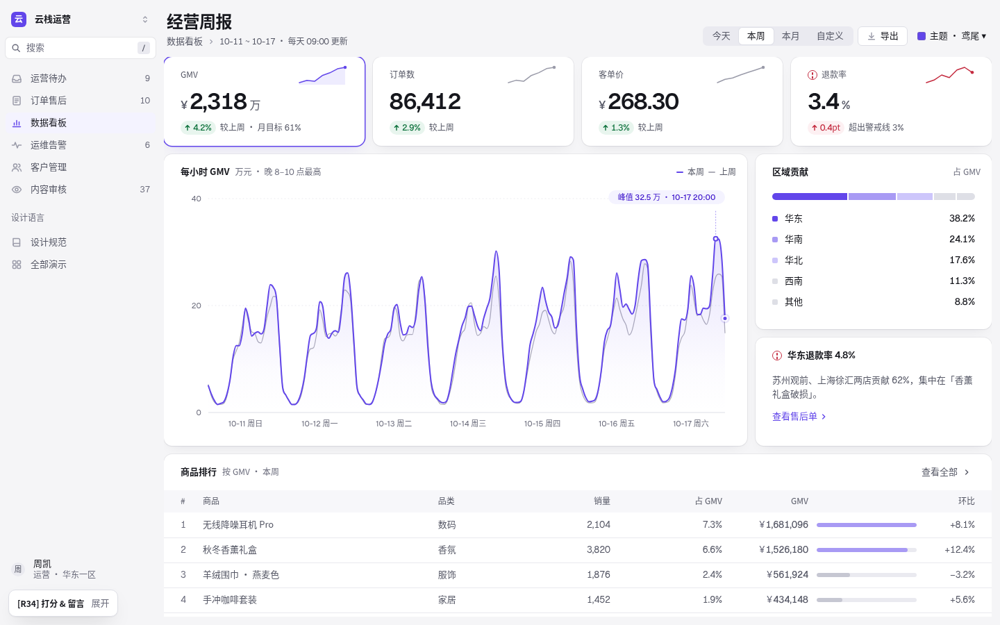
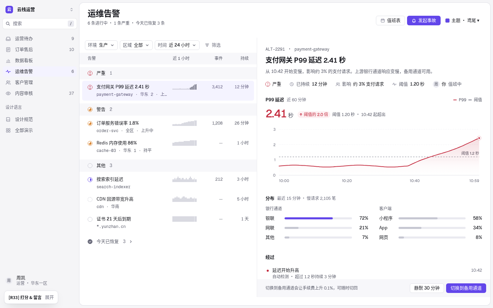
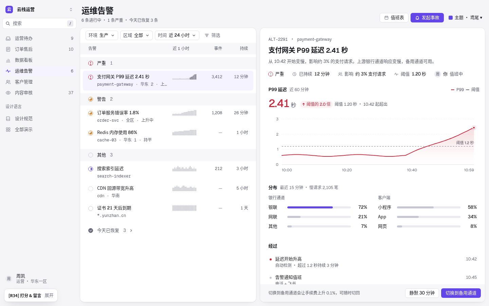
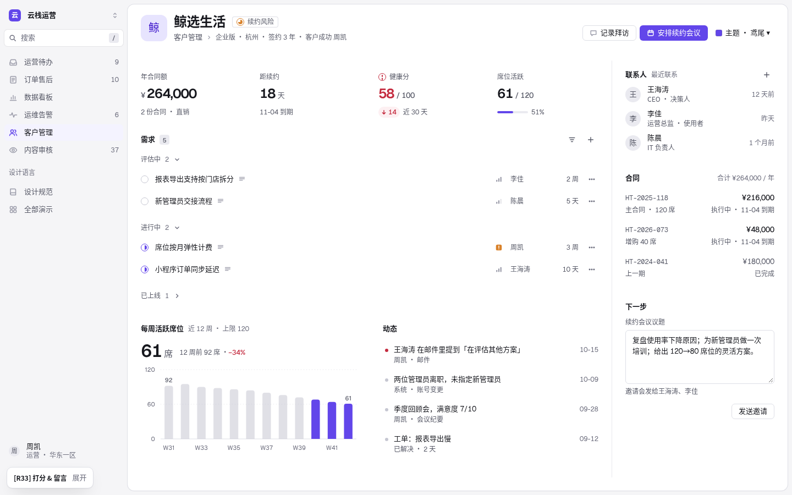
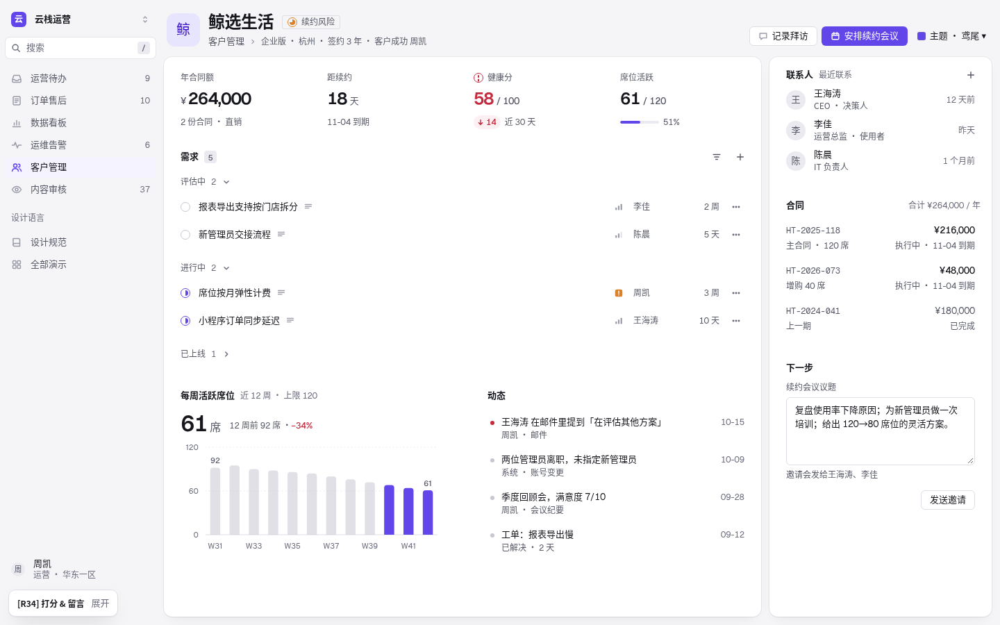
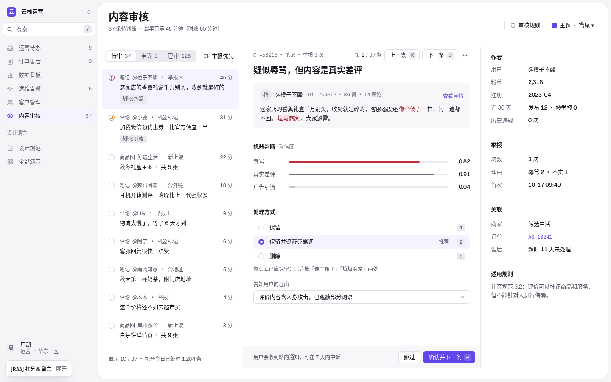
新增令牌
| 令牌 | 值 |
|---|---|
--r-panel | 12px |
--el-panel | 0 0 0 1px rgba(20,20,40,.055), 0 1px 2px rgba(20,20,40,.04), 0 8px 20px -10px rgba(20,20,40,.10)；星蓝：1px 白 7% 环 + 深影 |
--el-panel-hi | 悬停一级：环 7%、2px 近影、28px 远影 |
保留的规则
- R30：一个对象一块面；每组一块真实面板。
- R31：线少、AA 对比、间距尺。
- R32 质感五条：页头、显示级数字、图表读数、主色落点、手感。
- 鸢尾 #6246EA、Geist 数字、扁平按钮、只用无衬线、不用 Google CDN。
动效
M1–M10 不变。
M1 · 页签 / 分段：160ms 滑动
M2 · 悬停只改底色
悬停我：只改底色 100ms
第二行
悬停我：上浮 + 放大 + 投影
第二张
M3 · 展开收起：240ms 高度过渡
核对门店 9 月租金
更新国庆活动海报
4 笔退款已批准
核对门店 9 月租金
更新国庆活动海报
4 笔退款已批准
M4 · 抽屉：从右侧滑入，退出更快
AS-10241
AS-10241
M5 · 骨架屏形状和内容一致，只在真等待时
GMV
2,318 万
华东38.2%
华南24.1%
华北17.6%
GMV
2,318 万
华东38.2%
华南24.1%
华北17.6%
M6 · 数字只在变化时动一次
86,412
86,412
M7 · 首屏不表演
10 单
5 单
6 单
31 小时
10 单
5 单
6 单
31 小时
主题
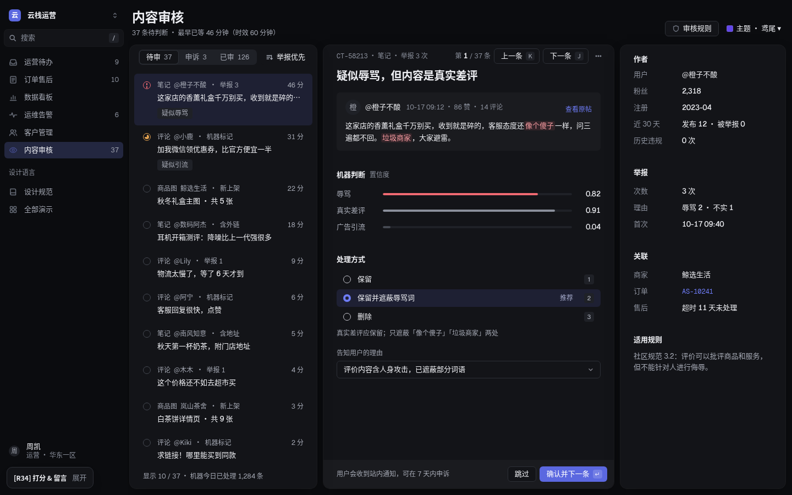
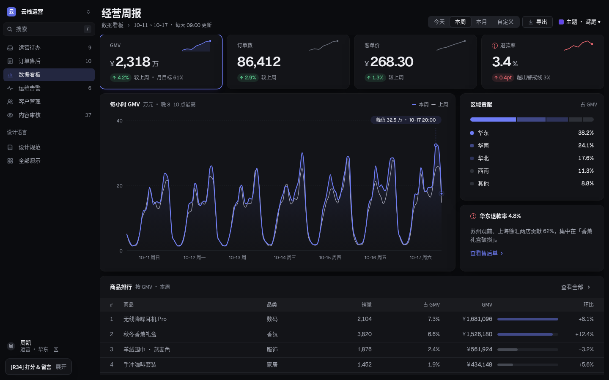
验收清单
- 每组一块面板，面板之间 12px，统一 12 圆角。
- 面板标题 13px / 600，与内容同一左线。
- 7 主题灰字对比 0 处不合格；订单首屏 ≥17 行。
- tools/m34_test.js BAD 0。